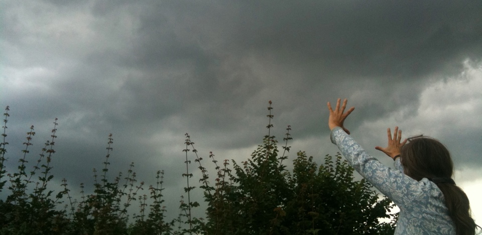

-
WolkenschieberUnterstützung für Kinder
-

GemeinsamBegleitenUnterstützenStärken

Gründungsmitglieder des Vereins Wolkenschieber e.V. von links: Andrea Hucketewes (1. Stellvertreterin), Elisabeth Schultheis-Kaiser, Katerina Edenfeld, Thomas Plugge, Sabine Wolff (1. Vorsitzende), Mechtild Reker, Ulrike Weickert-Zimmermann (2. Stellvertreterin), hier nicht anwesend: Wolfram Kleinemas , Patricia Schmolke, Marion Obeloer (Schatzmeisterin)
Wir sind Menschen aus verschiedensten Professionen: Erzieher, Psychologin, Ergotherapeutin, Kunsttherapeut, Künstlerin, Sozialpädagoge, Pastor, Ärztin, Krankenpfleger usw.
Es besteht eine gute Zusammenarbeit von Mitarbeitern und Ehrenamtlichen des Hospiz- und Palliativ-Vereins Gütersloh e.V., Palliativnetz, Caritas, Diakonie, Kinderschutzbund, Kinderschutzzentrum, Klinikum Gütersloh, kirchlichen und anderen Einrichtungen/Institutionen, die Kinder unterstützen.

Kinder und Jugendliche sind mit der schweren Erkrankung eines Familienmitgliedes konfrontiert.

Kinder und Jugendliche sind mit dem Tod eines nahen Familienangehörigen konfrontiert.
Unsere Angebote sind breit gefächert:
Alle Angebote sind kostenlos für die Familien.
Wir informieren gerne persönlich! Gemeinsam werden wir das richtige Angebot für Sie finden!
Hohenzollernstraße 22, 33330 Gütersloh
0176 / 38 86 49 29
kinder@wolkenschieber-ev.de
Bank: Volksbank Gütersloh
BLZ: 478 601 25
Konto: 1016 445 500
Spendenkonto: Volksbank Gütersloh, BLZ: 478 601 25, Konto: 1016 445 500